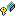

The fields of the SelfOrganizingNetwork class are listed below. For a complete list of SelfOrganizingNetwork class members, see the SelfOrganizingNetwork Members topic.
| columsCount | Number of colums in output layer. |
| currentIteration | Current iteration. |
| currentNeighborhoodSize | Current neighborhood size. |
| finalLearningRate | Final learning rate. |
| initialLearningRate | Initial learning rate. |
| initialNeighborhoodSize | Initial neighborhood size. |
| kohonenLayer | Represents the Kohonen layer as two-dimetional array of NeuroNode. |
| learningRate (inherited from AdalineNetwork) | Stores a learning rate value. |
| links (inherited from NeuralNetwork) | Links in the network. |
| linksCount (inherited from NeuralNetwork) | Number of links in the network. |
| neighborhoodReduceInterval | Neighborhood reduce interval. |
| nodeError (inherited from NeuroNode) | Node value and node error. |
| nodes (inherited from NeuralNetwork) | Nodes in the netowrk. |
| nodesCount (inherited from NeuralNetwork) | Number of nodes in the network. |
| nodeValue (inherited from NeuroNode) | Node value and node error. |
| rowsCount | Number of rows in output layer. |
| trainingIterations | Number of training iterations. |
| winnigCol | Winning column in output layer. |
| winnigRow | Winning row in output layer. |
SelfOrganizingNetwork Class | xpidea.neuro.net.son Namespace